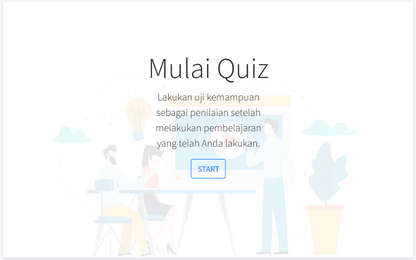
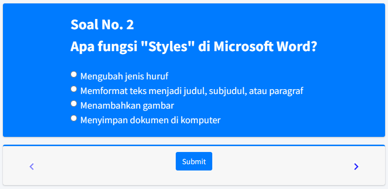
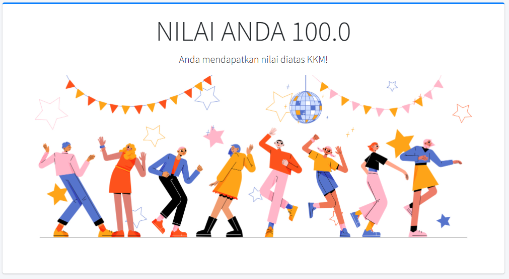

{% if current_user.is_authenticated and current_user.type == 'admin' %}
{% extends 'basemin.html' %}
{% else %}
{% extends 'base.html' %}
{% endif %}
{% block title %} Informasi {% endblock %}
{% block nav_item_info %} active {% endblock %}
{% block content %}

<div class="container">
    <div class="card">
        <div class="card-header">
            <h3 class="card-title">Tutorial Penggunaan</h3>
        </div>
        <div class="card-body" style="width: 85%;">
            E-quiz adalah bentuk ujian atau tes yang dilakukan secara elektronik, menggunakan platform digital
            atau aplikasi khusus untuk mengumpulkan jawaban dari peserta tes. E-quiz memungkinkan pengajar
            untuk membuat soal dengan pilihan ganda. Selain itu, pengajar juga dapat menentukan waktu
            dan batas waktu untuk menjawab setiap soal.
        </div>
        <div class="card-body">
            
        </div>
        <div class="card-body">
            Siswa akan diberikan tampilan soal pilihan ganda yang sudah dimasukkan oleh guru sesuai dengan materi
            yang telah disajikan, mereka harus menjawab semua pertanyaan sebelum dapat mengumpulkan untuk penilaian
        </div>
        <div class="card-body">
            
        </div>
        <div class="card-body">
            Mereka akan mendapatkan evaluasi dari soal yang telah diujikan setelah mengumpulkan kemudian dapat menjadi
            pembelajaran untuk mengetahui letak salah dan benar dari evaluasi tersebut
        </div>
        <div class="card-body">
            
        </div>
    </div>
</div>

{% block chart %} {% endblock %}
{% endblock %}